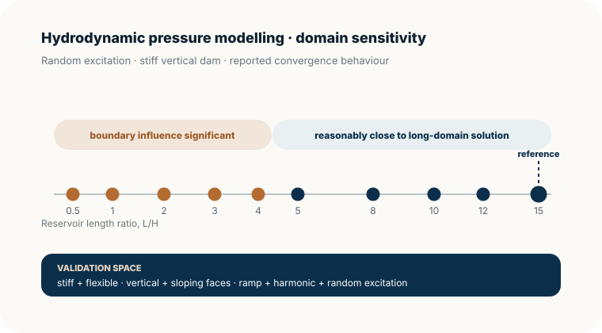
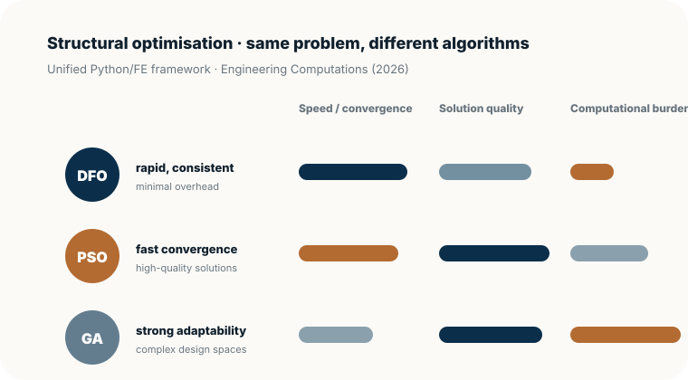

Start from mechanics
Formulate the governing interaction or failure mechanism before choosing the numerical method.
Quantitative results · field evidence · research impact
This page moves beyond publication titles. It brings together quantitative results, validation depth, field-scale monitoring and selected contributions to show what the work actually demonstrated and how the strands connect.
What connects the work
Formulate the governing interaction or failure mechanism before choosing the numerical method.
Use closed-form solutions, experiments, field measurements or independent datasets to test model behaviour.
Develop engineering-scale models that retain the state variables needed to reproduce path dependence and long-term response.
Use models and measurements to support assessment, design, optimisation, resilience and lower-carbon infrastructure.
Six highlights
Each contribution is presented through the engineering problem, the methodological advance and the wider programme it enables.
Quantitative evidence
Original summary graphics based on reported results; links below lead to the underlying publications or programme pages.
Offshore wind · gapping
GéotechniqueThe OWT case study predicted an approximately 4% reduction when pile–soil gapping was included, agreeing with the measured reduction at Kentish Flats. The modelled gap depth was about 9 m, or roughly 0.30 of the embedded pile length.
Offshore wind · ratcheting
Ocean EngineeringA one-parameter ratcheting formulation reproduced long-term displacement accumulation across single- and multi-amplitude loading. A constant ratcheting parameter of αr = 0.75 was shown to provide a useful first prediction across the assessed datasets.
Hydrodynamics · validation
Computers & GeotechnicsThe displacement-based reservoir FE formulation was tested against available analytical solutions and was later used independently as a validation benchmark by Sharma, Fujisawa & Murakami (2019).
Sensing · field evidence
Cambridge CSIC → BathThe programme progressed from distributed field measurement to mechanics-based interpretation and inverse estimation of hidden pile response and capacity.
Structural optimisation · reproducibility
Engineering ComputationsDerivative-free optimisation, particle swarm optimisation and genetic algorithms were compared under identical truss-design formulations, separating algorithm behaviour from modelling choices and providing a reproducible platform for bridge and dynamic optimisation.
Research translation
Field → model → decisionThis research logic now connects structural health monitoring, offshore dynamics, seismic assessment, optimisation and lower-carbon infrastructure within one mechanics-led programme.
The charts below are original web redraws of reported results and research trajectories; no publisher figures are reproduced. Exact quantitative values are linked to the underlying publications.

01 · Hydrodynamics & waterfront structures
Engineering problem. How should water–structure interaction be represented when the structure is flexible, geometry is non-trivial and the excitation is transient or random?
Contribution. A displacement-based finite-element reservoir formulation was tested across stiff and flexible dams, vertical and sloping faces, and several loading forms, with close agreement against available analytical solutions.
Why it matters. The framework provides a mechanics-based bridge from dam–reservoir interaction to other waterfront structures such as quay walls and supports a continuous line of work in computational marine infrastructure.
Evidence. For the stiff vertical-dam case under random excitation, reservoir domains with L/H < 5 differed significantly from the longest-domain solution; L/H ≥ 5 was reported as reasonably close, with L/H = 15 treated as the most accurate reference.


02 · Offshore wind foundations
Engineering problem. Offshore wind monopiles experience millions of lateral load cycles, yet conventional p–y design models do not fully represent gap formation, accumulation and path-dependent cyclic response.
Contribution. Practical beam-on-nonlinear-Winkler-foundation models were developed for gapping and ratcheting, retaining computational economy while capturing key long-term soil–pile mechanisms.
Why it matters. The work links soil degradation directly to structural dynamics and serviceability. In the gapping case study, the predicted natural frequency reduced from 0.338 Hz to 0.327 Hz, placing the system close to the 1P limit at 0.3255 Hz; the ratcheting formulation was validated across 17 cyclic tests up to 105 cycles.
Evidence. The gapping case study predicted 0.338 Hz without gapping and 0.327 Hz with gapping, with an approximately 9 m gap depth (~0.30 Lp). The companion ratcheting model was assessed against 17 cyclic load tests from five experimental set-ups up to 10⁵ cycles.

03 · Distributed sensing & inverse analysis
Engineering problem. Point sensors reveal only fragments of load transfer; deep foundations require spatially resolved measurements and a defensible route from strain data to hidden mechanical parameters.
Contribution. A long programme of DFOS field monitoring evolved into mechanics-based load-transfer interpretation and, more recently, PDE-constrained optimisation for inferring pile capacity from distributed strain data.
Why it matters. The sensing programme demonstrates how measurement, modelling and optimisation can be fused into monitoring-informed engineering rather than treated as separate activities.
Evidence. Field applications span Farringdon, London Bridge Station, the U.S. Embassy in London, CERN TT10 and the V&A Museum, followed by 2026 work using PDE-constrained optimisation to infer pile capacity from distributed strain data.

04 · Sustainable foundations
Engineering problem. Foundation design decisions affect both structural performance and whole-life environmental burden, yet optimisation must respect geotechnical response, construction constraints and material choice.
Contribution. Finite-element and optimisation frameworks were developed to compare pile geometries and materials, including concrete, steel and timber, under lateral and axial loading while minimising embodied carbon and/or cost.
Why it matters. In a monorail-bridge case study, adjustment of pile design parameters gave a reported 51.4% potential carbon saving; combining optimisation with cleaner materials increased the reported saving to 72.4%. A later geometry study reported more than 70% potential savings for optimal pile geometries compared with common industrial designs.
05 · Earthquake engineering & structural dynamics
Engineering problem. Earthquake demand depends on interaction between ground, structure, geometry, nonlinearity and input motion; simplified assumptions can obscure the mechanisms that control response.
Contribution. Research has addressed nonlinear earth-dam response, dam–reservoir interaction, RC building behaviour and broader dynamic infrastructure assessment using finite-element and time-history methods.
Why it matters. The work provides the dynamics backbone for current monitoring-informed assessment of buildings, bridges, dams and critical infrastructure.

06 · Structural design optimisation
Engineering problem. Optimisation methods are often compared across different formulations, making it difficult to separate algorithm performance from modelling choices.
Contribution. A unified Python/FE framework benchmarked derivative-free optimisation, particle swarm optimisation and genetic algorithms under identical truss-design problems, including bridge systems.
Why it matters. The work provides a reproducible platform for extending optimisation from static shape design to dynamic, reliability and multi-objective infrastructure design.
Evidence. Under the common formulation, DFO was reported as rapid and consistent with minimal overhead; PSO converged quickly to high-quality solutions; GA offered strong adaptability to complex design spaces at higher computational cost.
Research trajectory
The common thread is a move from model formulation, through validation and sensing, toward engineering-scale inference, optimisation and resilient infrastructure decisions.
Forward programme
Hydrodynamics, nonlinear foundation interaction, distributed sensing, dynamic assessment and optimisation now provide the ingredients for a broader programme in monitoring-informed coastal and marine infrastructure.
Collaboration
Collaboration enquiries are welcome across marine infrastructure, geotechnics, dynamics, sensing, optimisation and AI-enabled engineering.